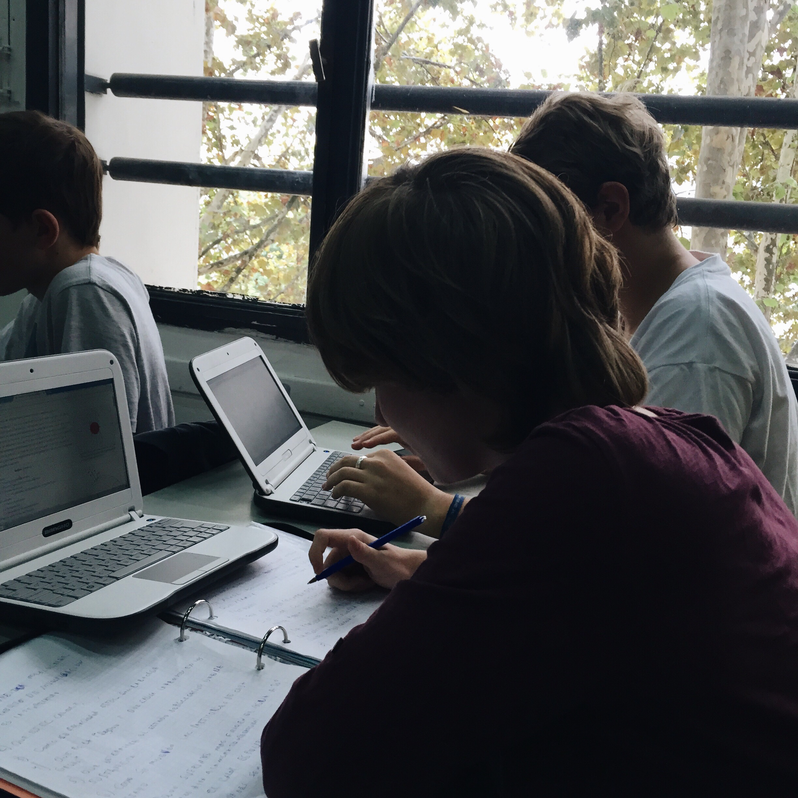

Aprende nuevas formas de aprender
En el dinámico panorama educativo actual, los estudiantes enfrentan desafíos únicos que requieren soluciones innovadoras. EstudIA se posiciona como un aliado estratégico, ofreciendo herramientas basadas en Inteligencia Artificial (IA) diseñadas para optimizar el estudio, mejorar el aprendizaje personalizado y fomentar la eficiencia en la gestión del tiempo.
EstudIA está comprometido en proporcionar a los estudiantes argentinos herramientas avanzadas que faciliten su éxito académico:
Para un aprendizaje personalizado y efectivo, recomendamos plataformas como Carnegie Learning y Knewton, que ofrecen tutorías personalizadas basadas en el rendimiento y estilo de aprendizaje de cada estudiante. Estas herramientas utilizan IA para adaptar el contenido educativo y ofrecer apoyo individualizado.

Utilizando plataformas como DreamBox y Khan Academy, EstudIA ofrece aprendizaje adaptativo que ajusta el contenido según el progreso y las necesidades únicas de cada estudiante. Esta personalización mejora la comprensión y el dominio de los conceptos educativos de manera efectiva.
Para mejorar la calidad de la escritura académica, recomendamos herramientas como Grammarly y ProWritingAid. Estas aplicaciones utilizan IA para revisar gramática, estilo y estructura de textos, ayudando a los estudiantes a perfeccionar sus habilidades escritas de manera autónoma y efectiva.
Facilitando la accesibilidad y la productividad, aplicaciones como Dragon NaturallySpeaking permiten a los estudiantes dictar sus trabajos, mientras que herramientas como NaturalReader y ReadSpeaker convierten texto escrito en voz, apoyando la comprensión auditiva de contenidos educativos.
Para optimizar la gestión del tiempo y las tareas académicas, EstudIA recomienda aplicaciones como Todoist y MyStudyLife. Estas herramientas de gestión de tareas ayudan a los estudiantes a organizar eficazmente sus horarios de estudio y tareas pendientes, promoviendo una planificación efectiva y un rendimiento académico consistente.
En EstudIA, nuestra misión es empoderar a los estudiantes argentinos con herramientas innovadoras que faciliten su aprendizaje y desarrollo personal. Creemos que la integración estratégica de la IA no solo mejora el rendimiento académico, sino que también prepara a los estudiantes para un futuro competitivo y globalizado.
 EstudIA
EstudIA